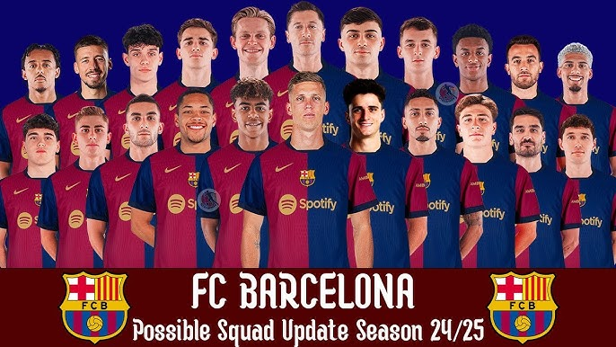

Главные достижения
- 27 титулов Ла Лиги
- 5 побед в Лиге чемпионов УЕФА
- 31 Кубок Испании
- 3 победы в Клубном чемпионате мира ФИФА
- 5 Суперкубков УЕФА
.jpg)
ФК «Барселона» — один из самых известных и титулованных футбольных клубов мира, основанный 29 ноября 1899 года Жоаном Гампером и группой швейцарских, английских и каталонских игроков. Клуб выступает в испанской Ла Лиге, а его домашний стадион — Камп Ноу, который является крупнейшим футбольным стадионом в Европе.


Марк-Андре́ тер Сте́ген родился 30 апреля 1992, Мёнхенгладбах — немецкий футболист, вратарь и капитан испанского клуба «Барселона» и сборной Германии.

Фре́нки де Йонг — нидерландский футболист, полузащитник «Барселоны» и сборной Нидерландов.
Ро́нальд Федери́ко Арау́хо да Си́льва — уругвайский футболист, защитник испанского клуба «Барселона» и сборной Уругвая. Участник чемпионата мира 2022 года.

Рафаэл Диас Беллоли более известный, как Рафи́нья (порт.-браз. Raphinha; родился 14 декабря 1996 года, Порту-Алегри, Бразилия) — бразильский футболист, вингер испанского клуба «Барселона» и сборной Бразилии.
«Камп Но́у»[2] (кат. Camp Nou, МФА [ˈkam ˈnɔw][3], в переводе «Новое поле») — стадион футбольного клуба «Барселона». С момента своего открытия в 1957 году стадион принадлежал испанскому футбольному клубу и вначале был назван Estadi del FC Barcelona (Стадион ФК «Барселона»), тем не менее уже тогда его называли «Камп Ноу». Официально своё нынешнее название он получил в 2000 году[4] после игры против футбольного клуба «Реал Мадрид». Вместимость «Камп Ноу» составляет 99 457 зрителя[1]; это самый большой по вместимости стадион не только в Испании, но и во всей Европе. Стадион является 12-м по вместимости зрителей стадионом мира и вторым в списке стадионов, предназначенных только для футбола, уступая по этому показателю только мексиканскому стадиону «Ацтека».
Стадион был построен, когда президентское кресло «Барселоны» занимал Франсеск Миро-Санс. Он продвинул проект будущего «Камп Ноу» из-за малой вместимости старого стадиона Camp de Les Corts, а также из-за того, что главный конкурент — «Реал Мадрид» построил Estadio Chamartín (ныне известный как «Сантьяго Бернабеу»). Проект нового стадиона «Барселоны» был поручен архитектору Франсеску Митжансу (двоюродному брату Миро-Санса).
Первый камень был заложен в марте 1953 года, а первоначальный бюджет составил 67 миллионов песет. Однако во время работы из-за непредвиденных изменений в почве возникли трудности, что увеличило срок постройки и затраты на стадион, которые достигли 288 миллионов. Клуб рассчитывал покрыть расходы на строительство за счёт продажи участка стадиона Les Corts, но муниципалитет Барселоны на десять лет задержался с переводом земли в другую категорию, что привело к временному дефициту средств. Франсиско Франко простил клубу долг.